Ground every answer
Retrieval over the real source — regulations, protocols, patient records — with citations required. If the sources don’t cover it, the system says so instead of guessing.
TTB & co-pilot builds ↓Jayce Nhan ParabellumAI Software Engineer · Teos Technology
I build LLM applications that hold up in regulated places — healthcare, federal, compliance — with agent orchestration, retrieval over real source material, and evaluation gates that stop a bad release before a clinician or an auditor ever sees it. Before AI, I spent six years architecting AWS GovCloud for a national security-vetting platform, and sixteen years in uniform as a Marine and an Air Force jet-engine mechanic.
I’m currently an AI Software Engineer at Teos Technology, building HIPAA-aligned clinical documentation and triage AI for 40+ skilled nursing facilities. Previously: Gauntlet AI Fellowship (Cohort 4), Cloud Systems Architect at Peraton on DCSA’s NBIS platform, and network engineering for CACI at the Pentagon.
A few things this path has led to
9 → <3 min
LLM-drafted clinical notes across 40+ skilled nursing facilities, at p95 under 800 ms.
72% → 94%
After a golden-dataset regression harness and canary rollouts gated every GenAI change.
$500M
Secure multi-cloud for DCSA’s NBIS vetting platform in AWS GovCloud; failed releases down 90%.
446
Plus a RAG eval and a replayed agent eval: 100% correct verdicts on the TTB label tool.
How I build
On the flight line, a 7-level signs for every job against technical data before an aircraft flies. I build AI systems the same way: measured, traceable, and honest about what they don’t know.
Retrieval over the real source — regulations, protocols, patient records — with citations required. If the sources don’t cover it, the system says so instead of guessing.
TTB & co-pilot builds ↓Versioned prompts, golden datasets, regression replay and canary rollouts with automatic rollback. A change ships when the evals say so, not when the demo looks good.
Release process at Teos ↓PHI de-identified at ingest, tenant-scoped retrieval, audit logs, auth on every endpoint, STIG-hardened hosts. Six years of NIST/RMF work makes this a habit, not a phase.
Federal cloud work ↓2008 → today · tap any stop
Origin
I enlisted in the Marine Corps in 2008, the year I finished Annandale High School in Virginia. Boot camp at Parris Island, Marine Combat Training at Camp Lejeune, then the metal worker school at Aberdeen Proving Ground. By 2014 I was a Sergeant at Quantico, running a tactical welding shop and training Marines as an infantry training NCO.
Then I crossed over to the Air Force side to work on jet engines. In the D.C. Air National Guard I was a C-40C propulsion NCO at Andrews, supporting diplomatic and distinguished-visitor missions, including White House missions. In the Air Force Reserve I led a propulsion shop on the C-5M Galaxy, the largest aircraft in the inventory, with 7-level sign-off authority over everything that left the shop.
That’s where my engineering habits come from: follow the technical data, document every step, train the next person to standard, and never sign for work you haven’t verified.
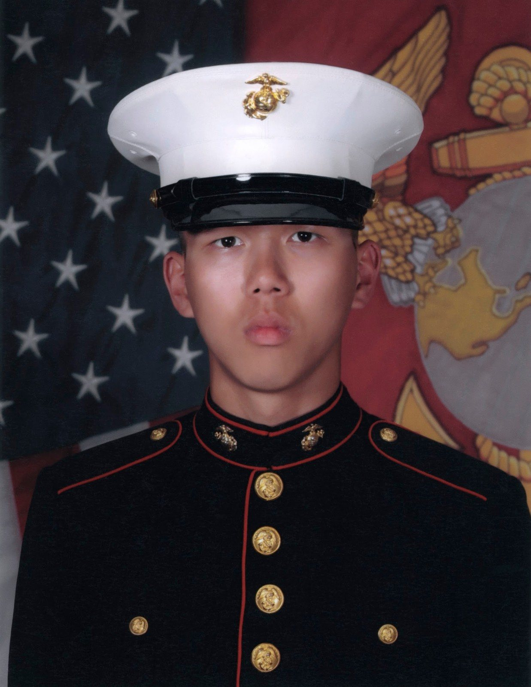
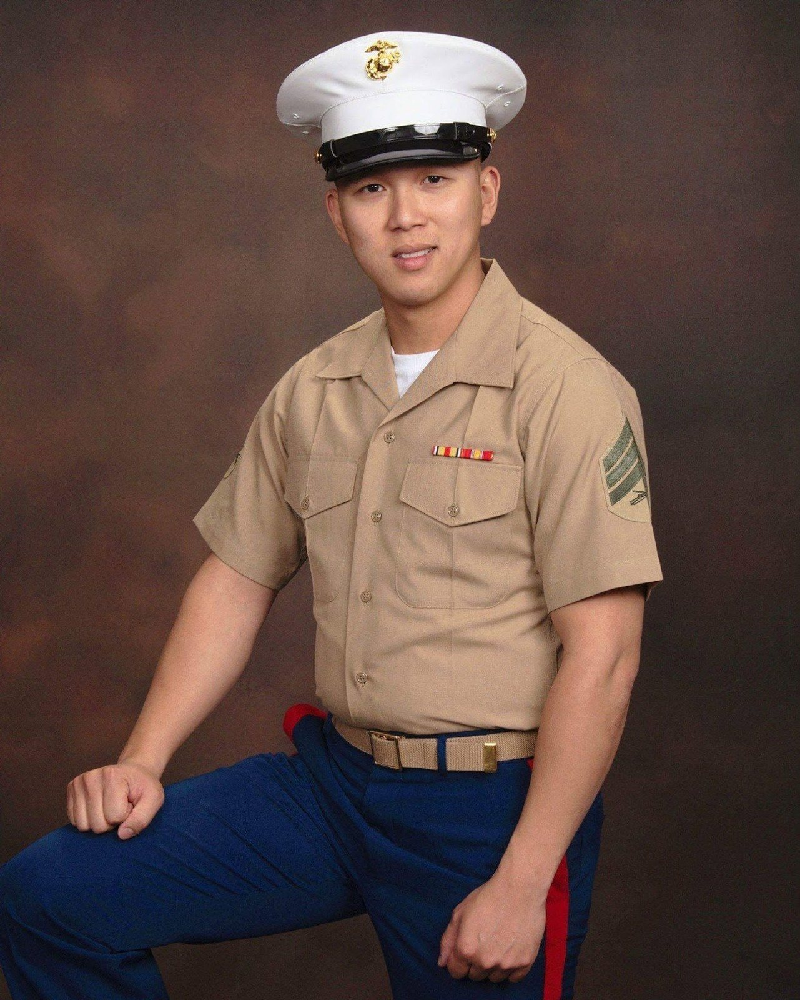
“Held 7-level sign-off authority over work released from the shop.”
A line from my C-5M years. It’s also how I think about an eval gate: the release doesn’t go until something qualified has checked it against the spec.
Decorations include the Air and Space Achievement Medal (2019) and the Army Commendation Medal (2017).
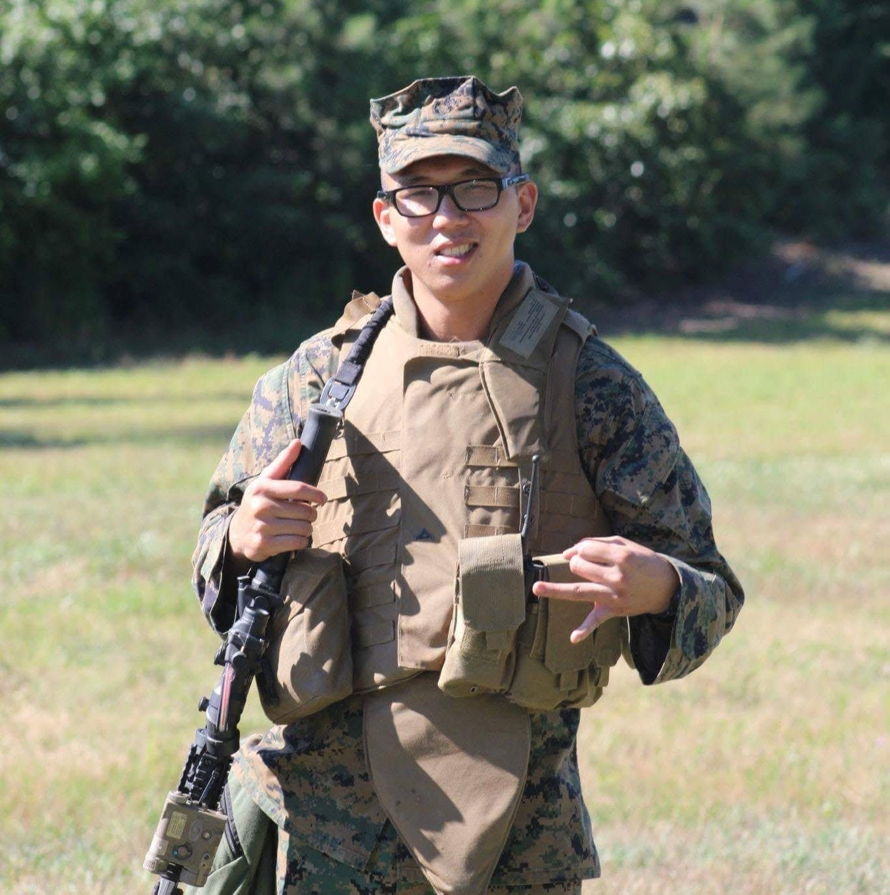
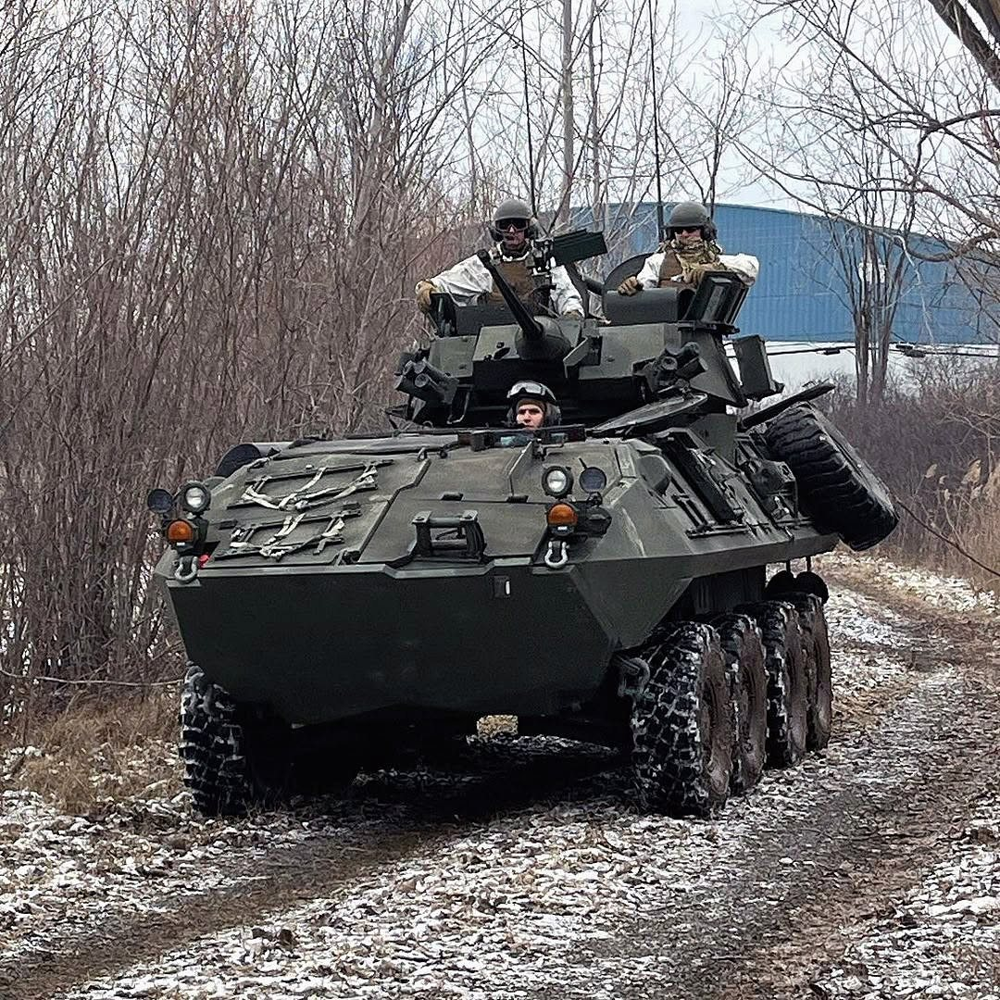
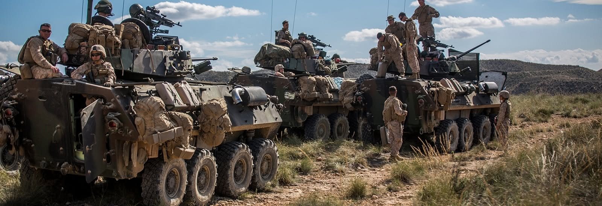
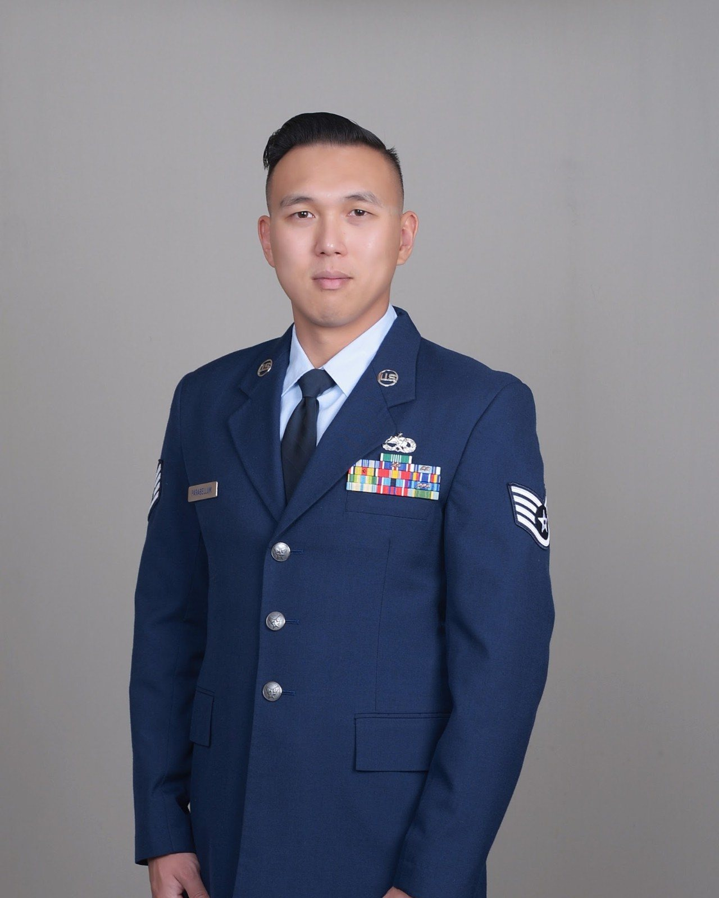
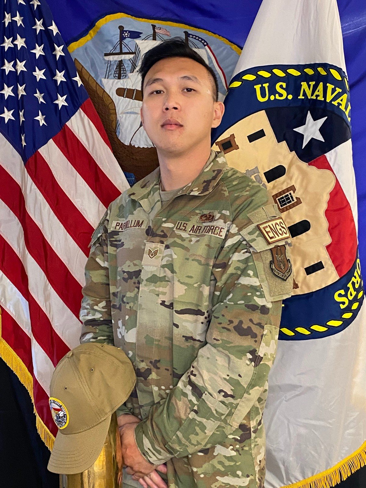
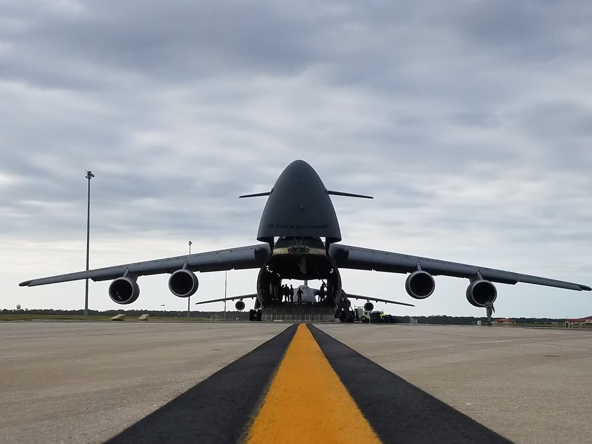
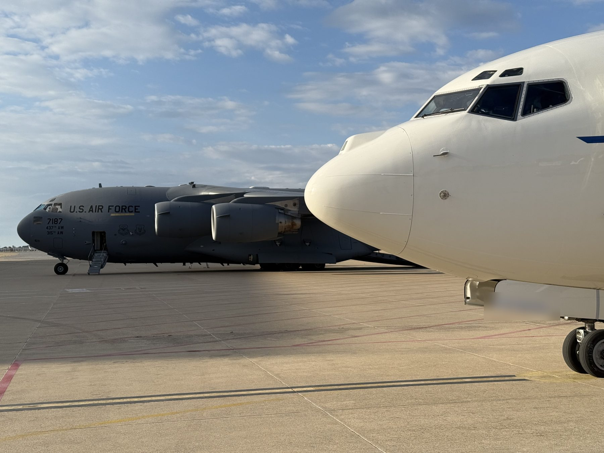
Photo credit: Boeing C-40C by Peter Bakema, via Wikimedia Commons, licensed under the GNU Free Documentation License 1.2; resized from the original.
Training along the way: the 424-hour TF34 jet engine course at Sheppard AFB, GE CFM56-7 line maintenance and borescope inspection, Boeing 737 maintenance and human-factors courses, and Airman Leadership School.
CACI · Phacil
Network Engineer II, CACI · Systems Administrator, Phacil
While still serving in the Guard, I moved into federal IT: network engineering for CACI, including video-teleconference support for the Secretary of the Army’s office at the Pentagon, and systems administration for Marine Corps Recruiting Command at Quantico.
Automated network provisioning and compliance auditing with Python and Ansible across 1,200+ managed devices, cutting new-site turn-up from about 6 hours to under 90 minutes.
Designed routing and switching for 25+ client environments (Cisco, BGP, OSPF), ran 30+ after-hours cutovers with no unplanned downtime, and led MPLS-to-SD-WAN migrations for 12 multi-site clients with Azure ExpressRoute and AWS Direct Connect.
ASA/Firepower, IPSec, 802.1X with ISE and VLAN segmentation; remediated 200+ audit findings. At MCRC, PowerShell automation for Active Directory and Exchange plus SOPs that let staff fix repeat issues themselves.
Peraton
(formerly Perspecta)
Cloud Systems Architect, Lead Associate
Grew from Systems Engineer III (Tier-2 AWS) on the same program
NBIS is the Defense Counterintelligence and Security Agency’s platform for federal background investigations, covering millions of applicants and cleared personnel. For nearly six years I worked on its secure multi-cloud infrastructure under a $500M federal contract.
Designed security architecture aligned with NIST, RMF, FedRAMP and Zero Trust, reducing vulnerabilities by 40% and shortening Authority to Operate timelines by 25%.
Implemented blue/green deployment in AWS GovCloud, cutting failed releases by 90% and bringing mean time to recovery down to 120 minutes.
Ran quarterly STIG implementations with SCAP scanning and wrote the remediation or justification for every open finding. Managed RHEL, Amazon Linux and Ubuntu fleets with hardened network ACLs.
Incident and change management for AWS GovCloud environments; patching and health checks across 100+ RHEL 7 servers; monitoring alerts tuned so issues were resolved before Tier-3 involvement; designs and SOPs documented in Jira and Confluence. Tools: Nagios, AppDynamics, PEGA.
Gauntlet AI Fellowship
AI Engineer, Challenger (Cohort 4)
An intensive AI engineering fellowship built around shipping production-grade AI projects on tight deadlines. These are the ones I’m proudest of.
Checks alcohol labels against 27 CFR and returns PASS/FLAG verdicts: 100% correct on a 24-case eval set, 211 ms worst case, and unreadable labels go to a human. LangGraph on Claude or local Ollama, hash-chained audit log, and citation-grounded hybrid RAG (BM25 + BGE, reciprocal rank fusion) that refuses when the regulations are silent. 446 tests, a RAG eval and a replayed agent eval gate every release; 21 CVEs fixed before launch.
Built in 4 days: five agents that continuously red-team a clinical LLM app. The attacker never grades itself; a separate Judge scores against versioned rubrics. Replayable typed handoffs, a cost ledger that kills campaigns at 120% of budget, and threat intel from 8 sources (OWASP LLM Top 10, MITRE ATLAS, NIST AI 600-1, CISA KEV…).
Read-only co-pilot on OpenEMR that writes pre-visit summaries where every item must cite a patient record or it’s removed before display. Permission checks run server-side before any data reaches the model. Plus a Pinecone RAG pipeline for patient intake documents.
LangGraph agent with LangSmith tracing and admin approval for high-severity actions. Scheduled security scanner on AWS via Terraform (EventBridge, Lambda, CodeBuild, S3). Initial JavaScript bundle cut 77%; API p95 latency down over 30%.
Teos Technology · Aug 2026 – present
AI Software Engineer
Teos builds telehealth software for skilled nursing facilities. I build the AI features end to end — LLM services, retrieval, the HIPAA-aligned pipeline under them, and the release process that keeps them trustworthy — and I ship on the .NET, React and SQL Server platform too.
Azure OpenAI with LangGraph orchestration and pgvector retrieval over facility protocols and patient history. Charting time fell from about 9 minutes to under 3 across 40+ facilities.
Python/FastAPI services with PHI de-identification at ingest, tenant-scoped retrieval, prompt and response audit logging and streaming APIs: p95 under 800 ms at ~15K encounters a month, with no PHI exposure incidents.
Versioned prompt registry, golden-dataset harness scoring grounding and hallucination rate on every change, canary rollout with automatic rollback. Acceptance rose 72% → 94%; model-related incidents fell ~60%.
An AI triage layer ranking after-hours calls by acuity contributed to an 18% drop in avoidable ED transfers. 57 PRs on the core platform, including auth-by-default on every API endpoint and encrypted patient–provider messages at rest.
Built by me · open to explore
Public repositories from my fellowship work and the assistant on this page. The AI on this site is itself a portfolio piece: hybrid retrieval, reranking and grounded generation behind a hardened edge function.
RAG · this site
Hybrid BM25 + embedding search, reciprocal rank fusion, cross-encoder reranking, and Llama 3.3 answers with citations, streamed from a Cloudflare Worker.
Try it below ↓Compliance AI · LangGraph
27 CFR label checks with grounded RAG, human hand-off and a 446-test release gate.
View on GitHub ↗AI security · multi-agent
Five agents red-teaming a clinical LLM app, with an independent judge and a hard cost ceiling.
View on GitHub ↗DevSecOps
A FastAPI security-header auditor whose real subject is the pipeline: tests, static analysis, dependency audit, CodeQL, Dependabot and GHCR container releases in GitHub Actions.
View on GitHub ↗Credentials
Degrees, certifications with verification links, awards, every military course, and the toolset.
Education
M.S. Computer Science (AI) · CU Boulder
Expected Jun 2028 · 4.0 GPA · coursework ↗
Gauntlet AI Fellowship · Cohort 4 · 2026
A.A.S. Aviation Maintenance Technology · Community College of the Air Force · 2021
B.S. Accounting · University of Maryland Global Campus · 2019
Certifications
AWS Solutions Architect – Professional · 2025
AWS Security – Specialty · 2025
AWS Solutions Architect – Associate · 2020 (expired 2023)
CompTIA SecurityX · Security+ (2025)
Cisco CCNA · 2019 (expired 2023) · Lean Six Sigma Black Belt
All 9 with proof links ↓ · 16 military courses ↓ · 14 awards ↓
Toolset
LLM & agents: LangGraph, LangChain, Claude, OpenAI Responses API, structured outputs, LangSmith
RAG: pgvector, Pinecone, OpenSearch, BM25 + BGE, RRF, reranking
Inference: Azure OpenAI, Bedrock, Ollama homelab, OpenRouter
Infra: AWS GovCloud, Terraform, Docker, GitHub Actions, Azure DevOps, Ansible, STIG/SCAP
Code: Python, TypeScript, React, C#/.NET, SQL, R
Certifications · with proof
| Certification | Year | Proof |
|---|---|---|
| AWS Certified Solutions Architect – ProfessionalAmazon Web Services | 2025 | Badge ↗ |
| AWS Certified Security – SpecialtyAmazon Web Services | 2025 | Badge ↗ |
| CompTIA SecurityX (formerly CASP+)CompTIA | 2025 | Badge ↗ |
| CompTIA Security+ ceCompTIA · renewed through 2028 | 2016 | Badge ↗ |
| Lean Six Sigma Black Belt in Information TechnologyAveta Business Institute | 2020 | Issuer ↗ |
| AWS Certified Solutions Architect – AssociateAmazon Web Services · expired 2023 | 2020 | Badge ↗ |
| Lean Six Sigma Green Belt in Information TechnologyAveta Business Institute | 2019 | Issuer ↗ |
| Cisco CCNA Routing and SwitchingCisco · expired 2023 | 2019 | Badge ↗ |
| Microsoft 70-410: Installing and Configuring Windows Server 2012Microsoft | 2017 | Badge ↗ |
Badge opens the certification’s public Credly page, issued by AWS, CompTIA, Cisco or Microsoft. Issuer opens the issuing program’s page; for those, email me for the certificate.
Awards & decorations
Military & technical training · 16 courses
IT & security training
Training records are available on request.
Off the clock
Denver · Toastmasters, the Legion, Habitat for Humanity, the Rockies, BMX, a built STI, One Piece and a homelab.
These days I’m in Denver. I’m a member of the LoDo Toastmasters club, where I earned my Ice Breaker ribbon, and of American Legion Post 1, and I’m part of Guitars for Veterans. Before Colorado I served as a United States Naval Sea Cadets Instructor in San Antonio and served as a range safety officer at the Quantico Shooters Club.
I’ve volunteered with Habitat for Humanity on a build for veterans. Some of my oldest friends are my Lambda Phi Epsilon brothers from Virginia Commonwealth University, and I graduated from the University of Maryland in 2019.
When I get time off I’m outside: biking the Rocky Mountain backcountry in Colorado, riding BMX in Philadelphia, or stopping by Griffith Observatory in Los Angeles. I’m a car person with a built 2017 Subaru STI, and a One Piece fan who collects the trading cards.
At home there’s a small rack of machines running local language models. If that’s more interesting to you than my architecture diagrams, it’s a perfectly good reason to reach out.
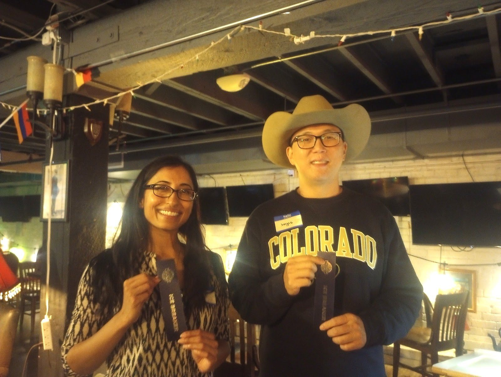
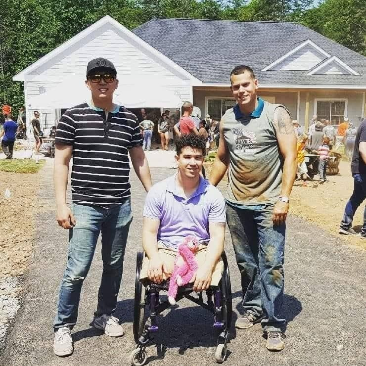
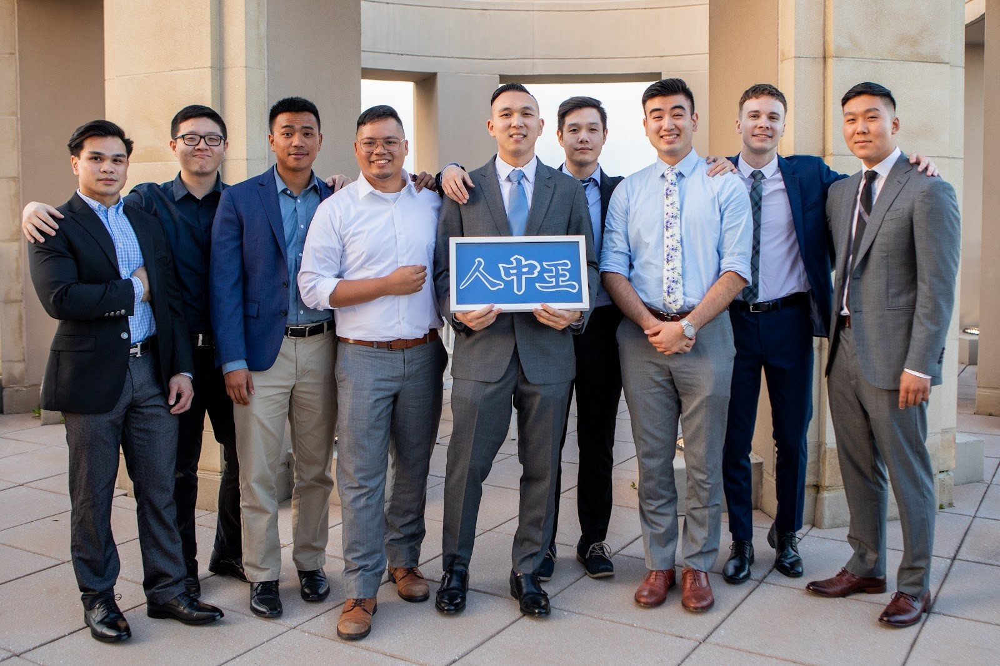
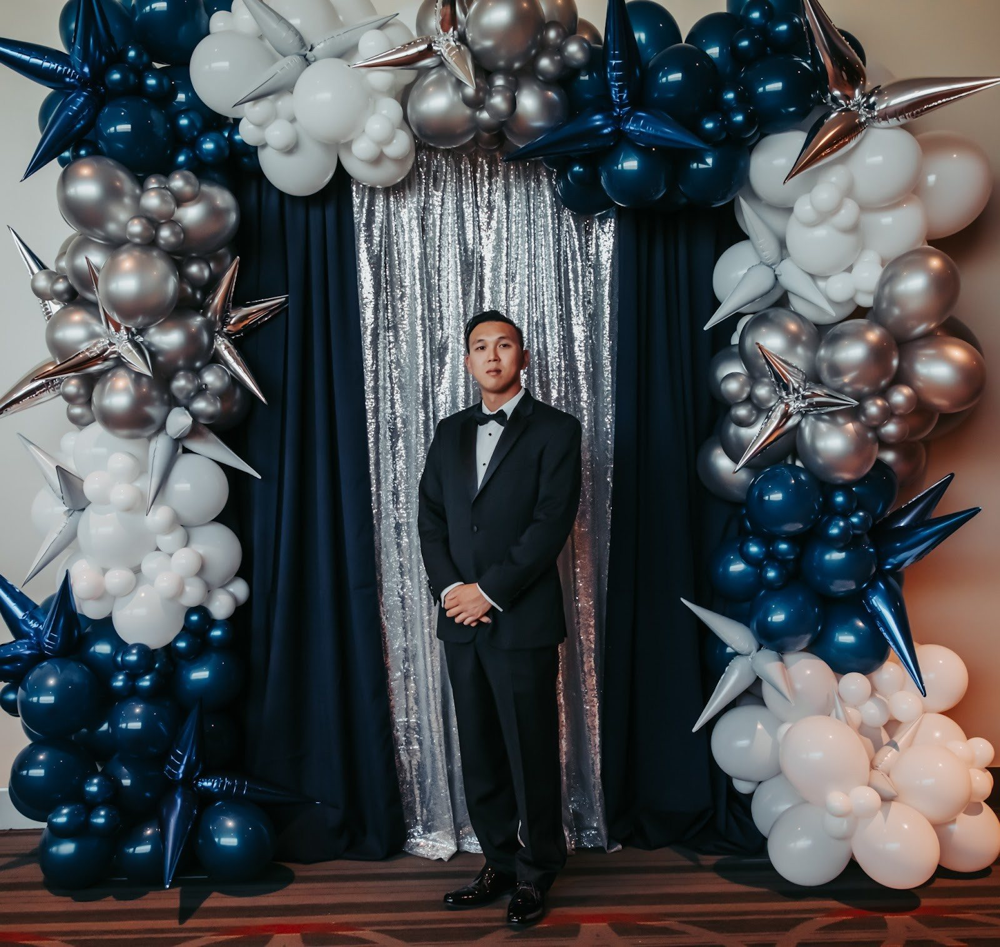
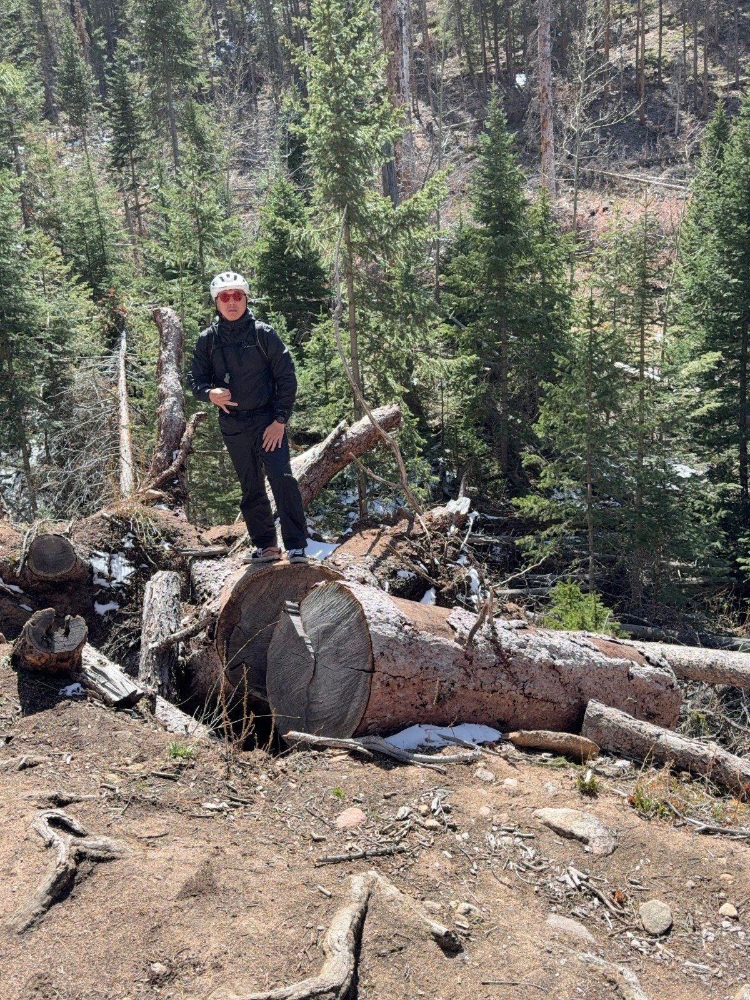
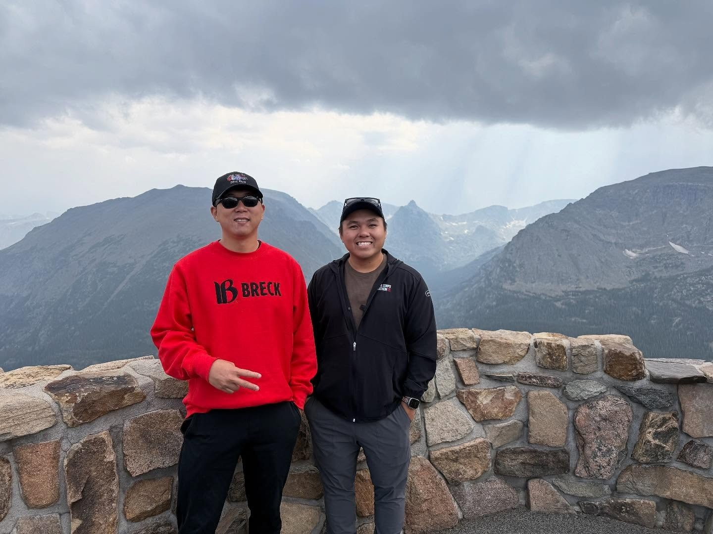
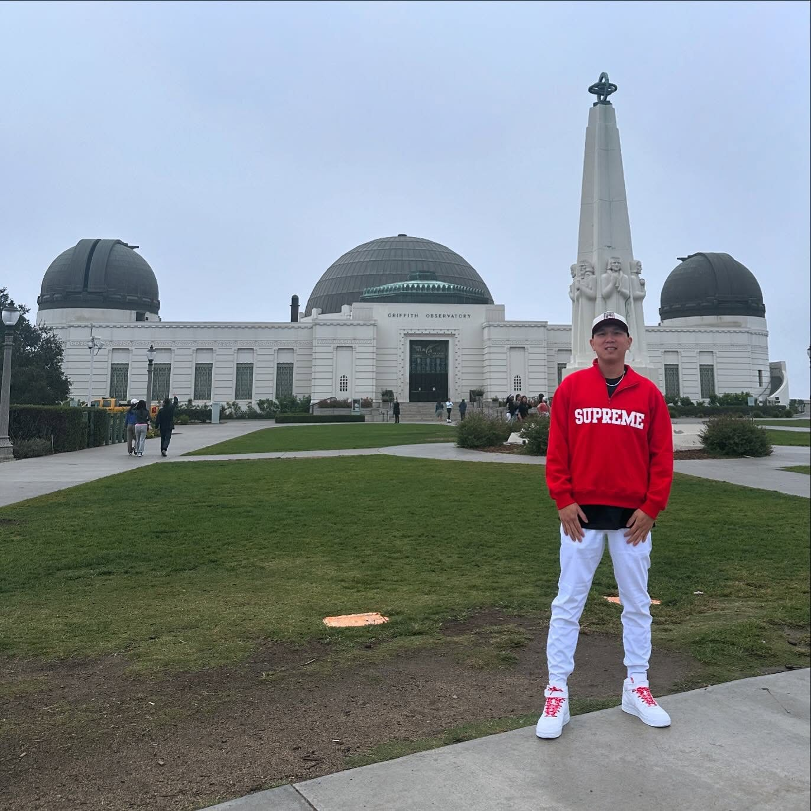
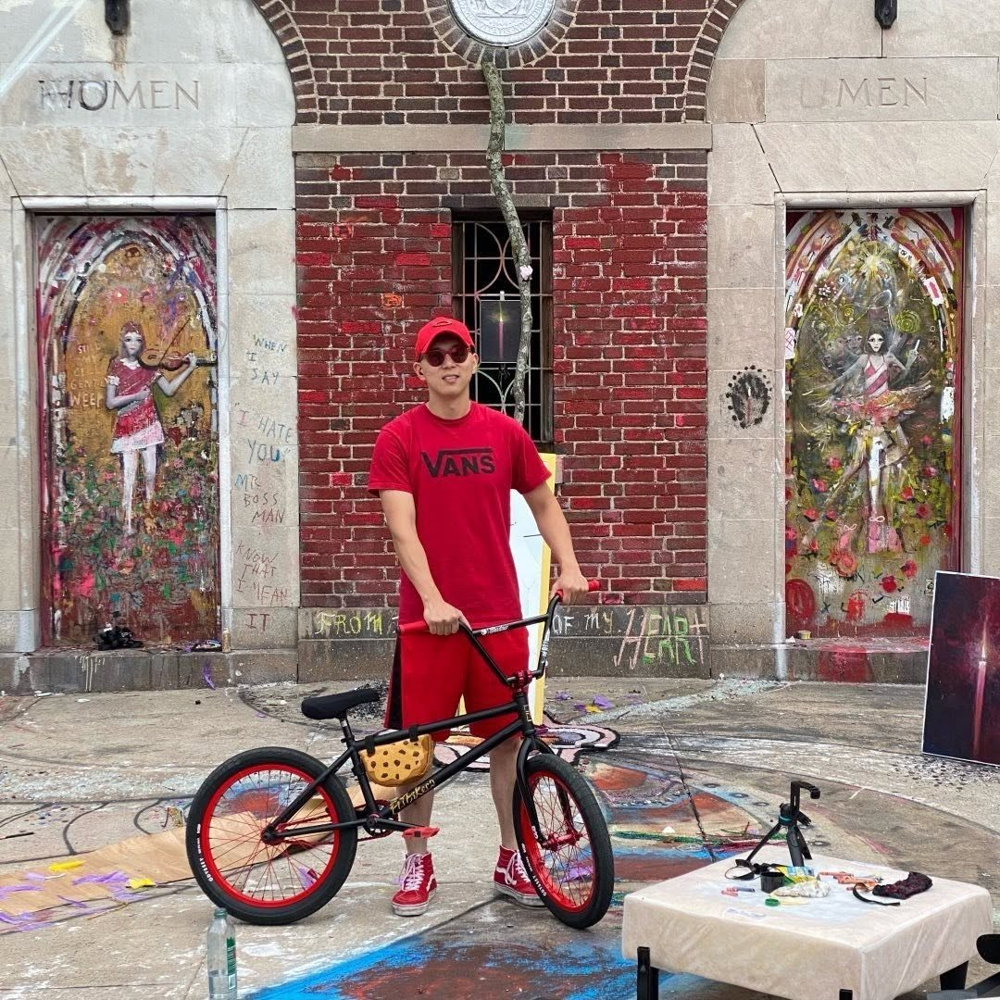
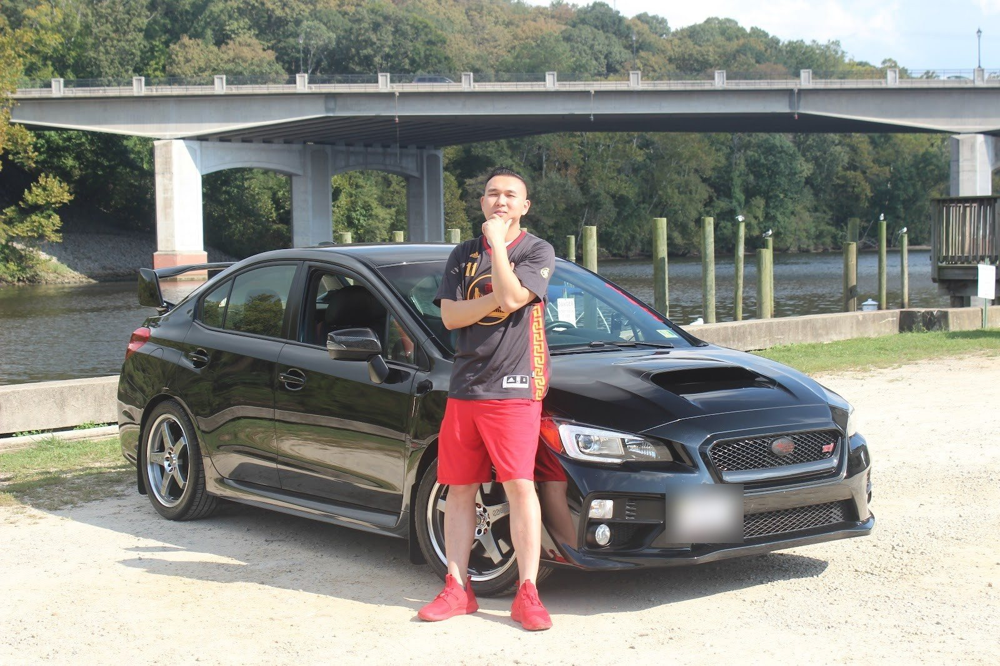
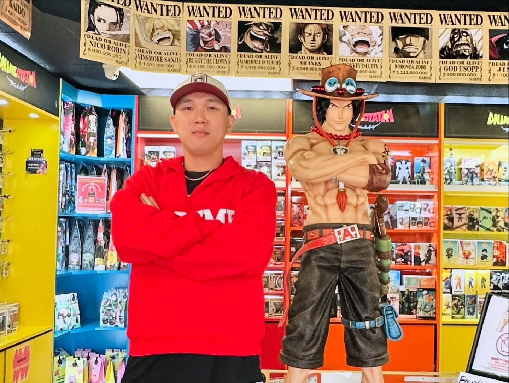
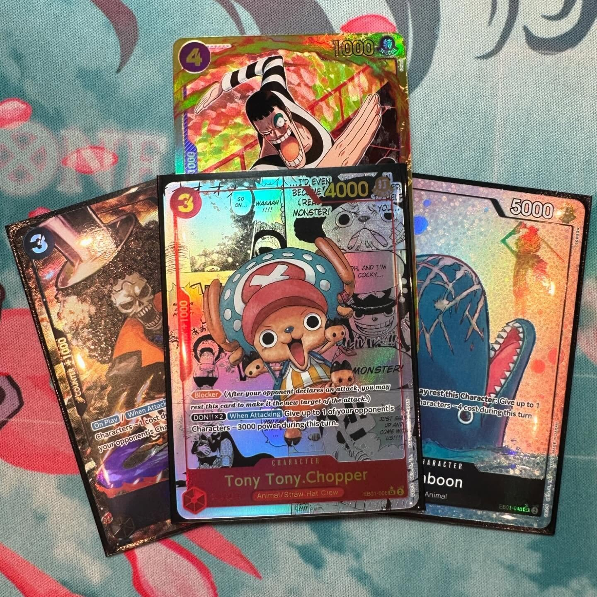
Ask my AI
Grounded in my résumé, CV and project notes. Answers cite their sources.
Ask about a role, a project, a skill or my service. Follow-up questions work. Open “How this answer was built” under any reply to see the retrieval pipeline at work.
Contact
For AI engineering, cloud and DevSecOps roles, or just to compare notes on RAG and evals, reach me here.
Denver, CO · AI engineering · Secure cloud · Veteran
Ask Jayce’s AI